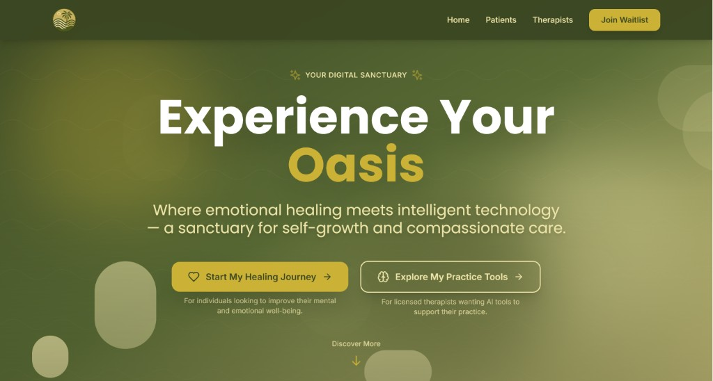
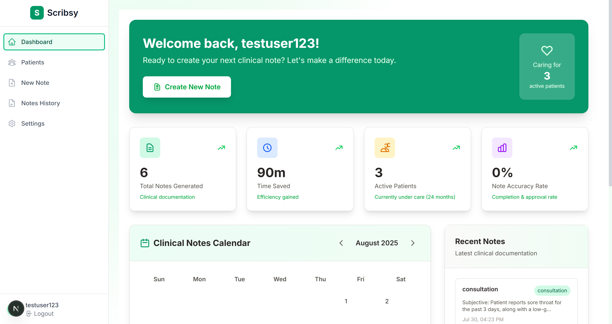
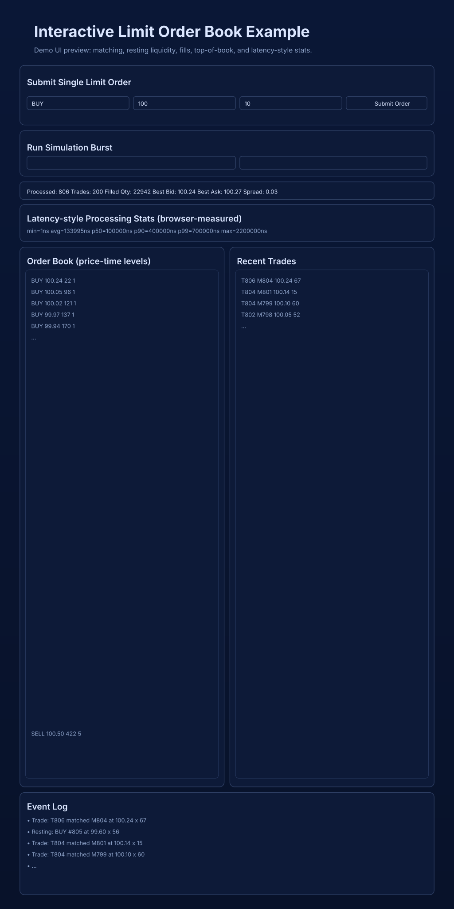
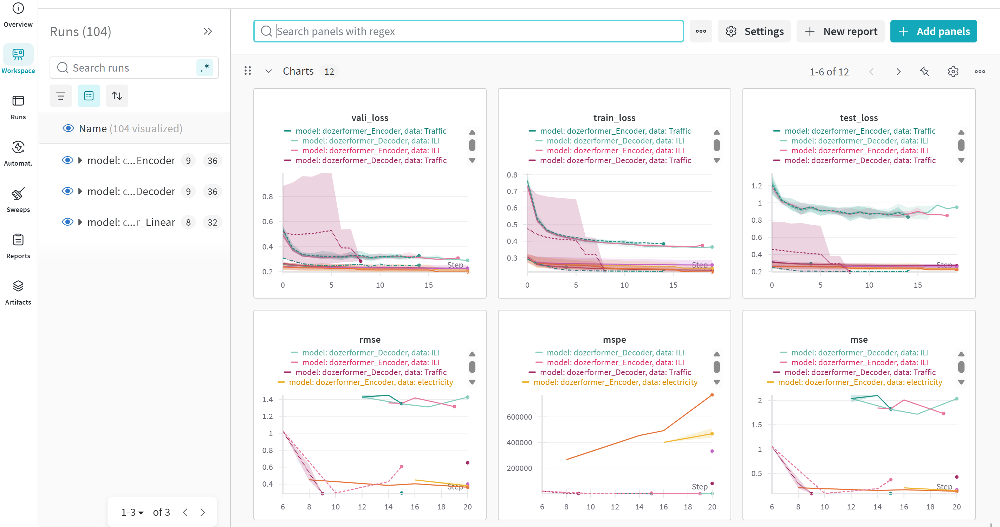

MYOASIS.AI / SOFTWARE ENGINEERING INTERN

MYOASIS
Built responsive UI and data-backed features for an AI journaling platform, collaborating with the CTO on product specs.
ST. LOUIS, MO
SOFTWARE ENGINEER · ARROWS UP
Software engineer building practical products and systems.
My work spans full-stack development and machine learning research, with an emphasis on reliable, useful software.
PORTFOLIO
Experience in product development, systems engineering, and machine learning research.

Built responsive UI and data-backed features for an AI journaling platform, collaborating with the CTO on product specs.

Built audio transcription and SOAP note workflows for an AI medical scribe during an eight-week internship.

Built a C++ matching engine with price-time priority, per-order latency metrics, and an interactive browser demo.

Co-authored an ITNG 2026 paper comparing transformer architectures for time series forecasting through ablation studies.
More projects on GitHub ↗
BACKGROUND
I’m a software engineer at Arrows Up with experience across full-stack products and applied machine learning.
I studied computer science at Missouri State University from 2022 to 2025. My work includes production software, AI applications, and published research on transformer architecture for time series forecasting.
As president of Missouri State’s ACM chapter, I helped students explore paths in computer science and build together.
Springer ITNG 2026 publication
First place, 2025 CNAS Computer Science symposium
AWS Certified AI Practitioner, 2026
CONTACT
Interested in working together or discussing a project? Get in touch.
Explore more on GitHub ↗